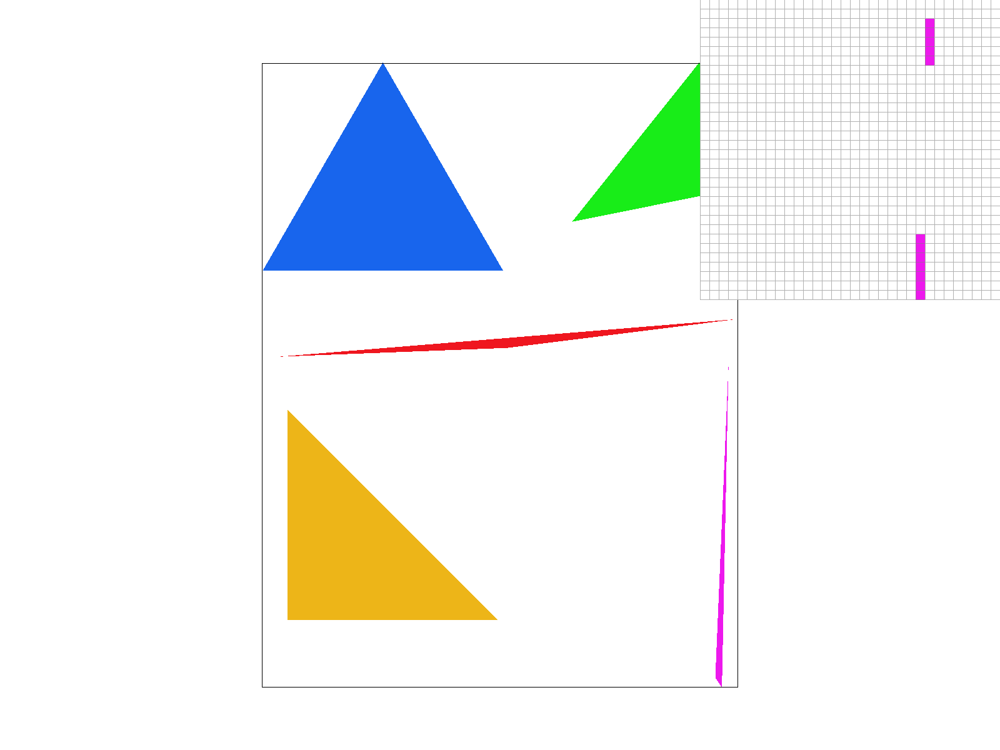
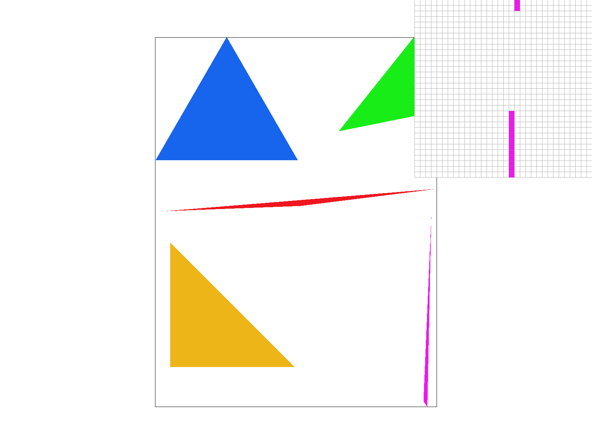
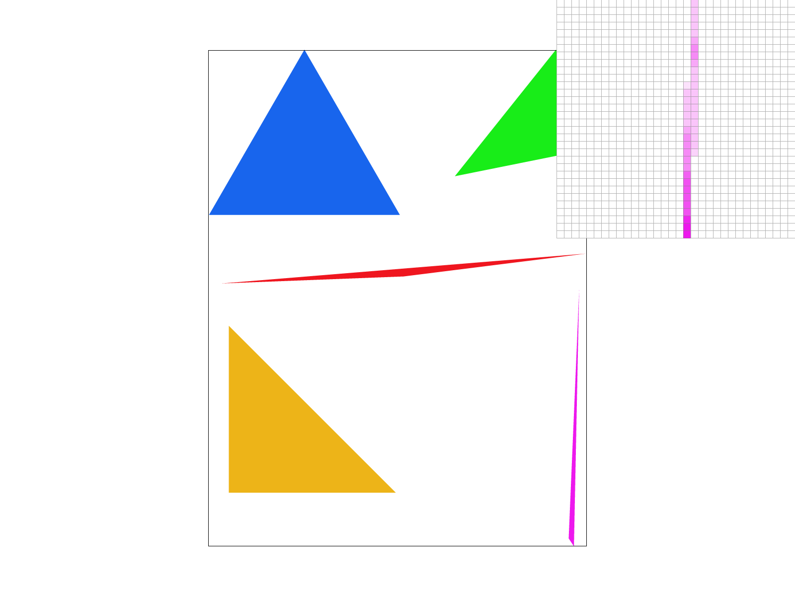
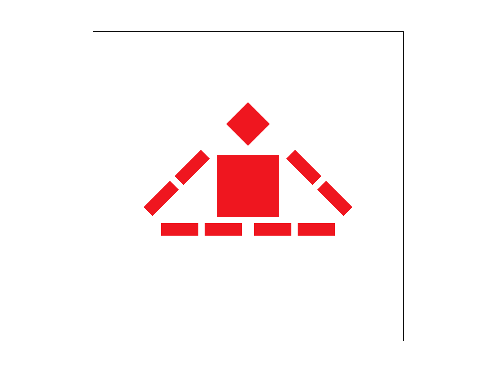
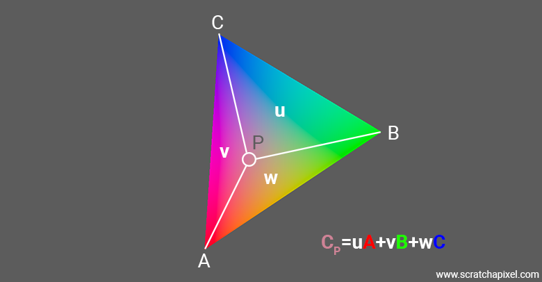
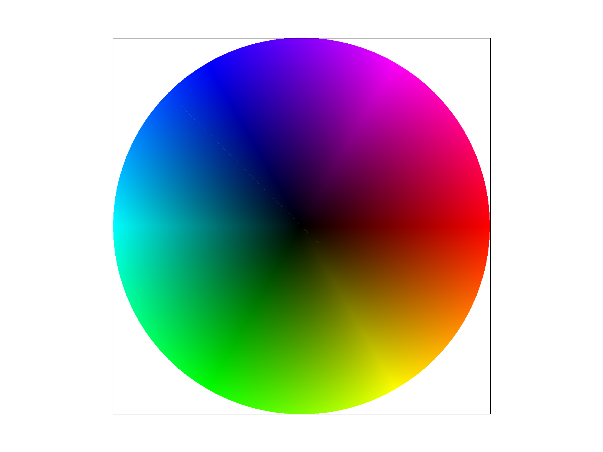
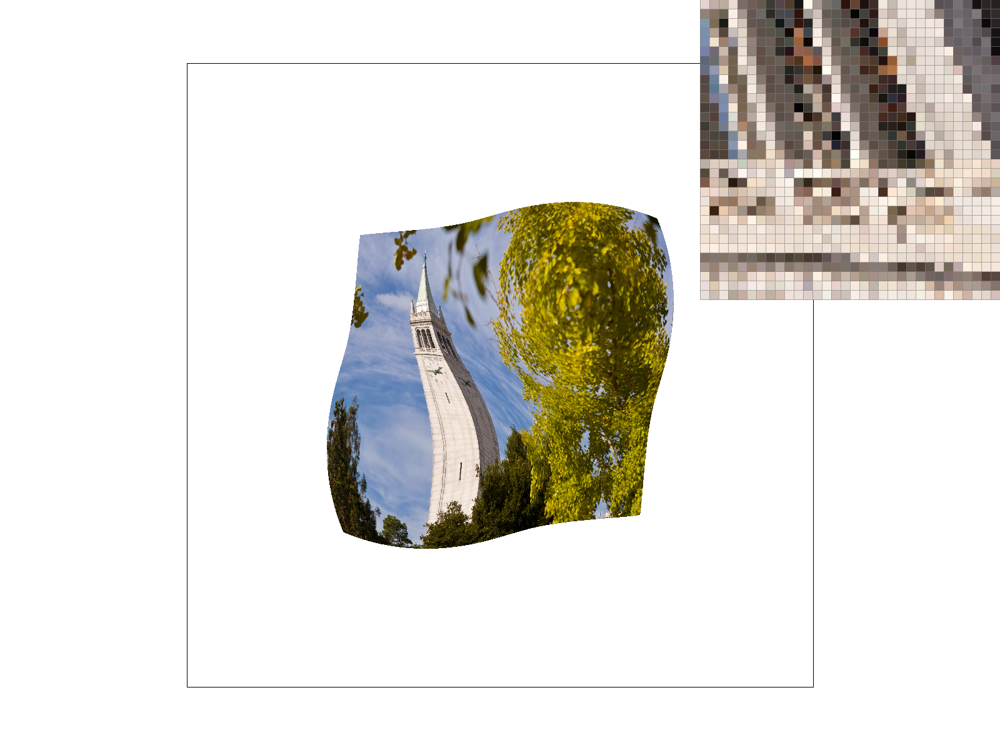
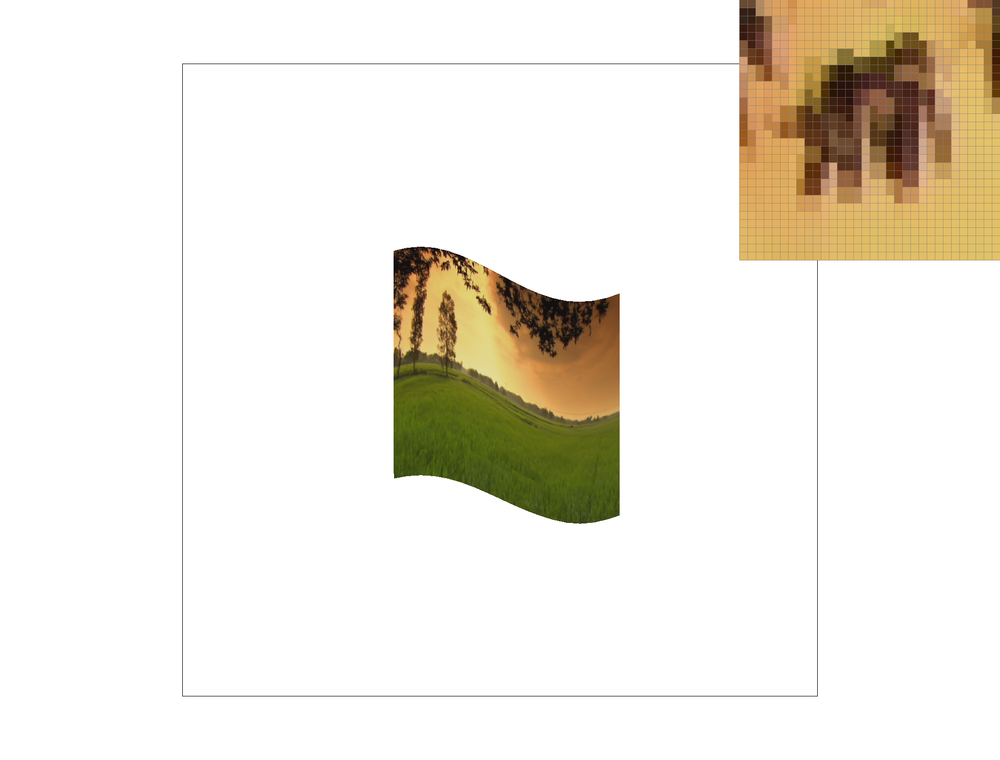
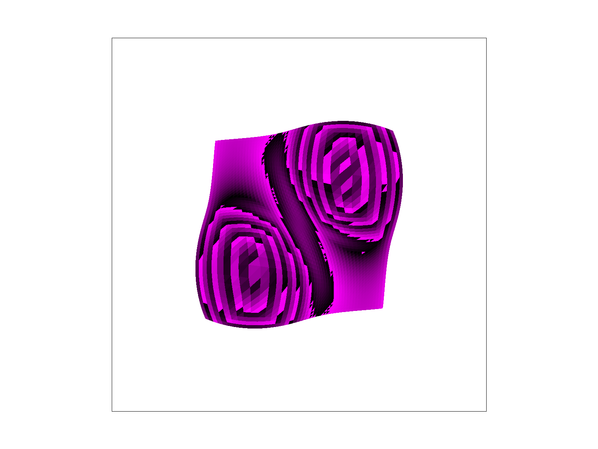

CS184/284A Spring 2025 Homework 1 Write-Up
Jacob Landman
Link to webpage: jacob-hw1-webpage
Link to GitHub repository: jacob-hw1-repo

Overview
In this homework, I implemented a rasterizer to draw single-color triangles, antialiasing by supersampling, transforms, barycentric coordinates, pixel sampling for texture mapping, and level sampling with mipmaps for texture mapping. I learned a lot about the graphics pipeline in the process of learning and implementing these features.Task 1: Drawing Single-Color Triangles
My implementation to rasterize single-color triangles defined in an svg file:- Read in the svg file and parsed the triangle vertices and color
- For each triangle, computed the winding order by computing the cross product of two vectors obtained from subtracting vertices coordinate-wise
- Computed the bounding box by taking the min and max of x and y vertex coordinates
- For every point in the bounding box, constructed a vector from each vertex and took the cross product with the edge functions
- Evaluated the outcomes of the edge function test -
- If all edge tests had the same sign and matched winding order, filled pixel
- If some edge tests gave 0 and others shared sign, filled pixel
- Else, continued

Task 2: Antialiasing by Supersampling
My implementation:- Take samples at offset grid-spaced intervals in each pixel, at a given sample rate
- Write those samples the sample buffer
- To resolve, average the samples corresponding to the pixel
|
 |
|
|
|
 |
Task 3: Transforms
For this implementation, I just wrote in the basic 3x3 matrix forms in the respective functions in transforms.cpp and messed with the .svg robot to make them meditate.- Translate 2D in homogeneous coordinates: 3x3 identity matrix with the 0s in positions [2][0] and [2][1] replaced with dx and dy
- Rotation 2D in homogeneous coordinates: 3x3 made up of 2D rotation matrix, an extra one in the last entry, and zeroes elsewhere
- Scale 2D in homogeneous coordinates: 3x3 identity matrix with the first two ones replaced with some other scale factor.

Task 4: Barycentric coordinates
Barycentric coordinates are a coordinate system that is essentially a weighted average between the vertices of a triangle. It is helpful in graphics programming as a medium-expensive medium-effective way of determining color or other characteristics of triangles in a mesh, and surely has other applications. The triangle image shows how one red, one blue, and one green vertex interpolate in barycentric coordinates to colorize the triangle. I used the same algorithm as in task 1 and ended up with a slight artifact that appears to be a diagonal line of intermittent blank pixels. Given more time to debug, I would delve further into this, but considering it only effects less than 1% of the pixels, I will chalk this one up as good enough for government work, especially because supersampling all but covers it up.

Task 5: "Pixel sampling" for texture mapping
My implementation of pixel sampling essentially repurposed the barycentric coordinates from earlier to interpolate between color values at the vertices of the triangle. Nearest pixel sampling simply rounds the pixel to the nearest texel and samples that one, while bilinear sampling lerps the colors at the four nearest texels.|
 |
|
|
|
|
Task 6: "Level Sampling" with mipmaps for texture mapping
Level sampling is the way we decide which mipmap to sample a texture from. Mipmapping can help antialias textures, but we need to choose how to sample from the different levels. The implemented approaches are:- level 0 - bypass mipmapping
- No compute, no help antialiasing
- nearest - round decimal to whole number
- Light compute, some antialiasing
- bilinear - lerp colors given by sampling the higher and lower integer levels
- Heavy compute, most antialiasing, oversmoothing?
|
|
|
|
 |
|
Closing remarks
Here's a cool image I made while debugging a buggy mipmap implementation. Accidental portal!